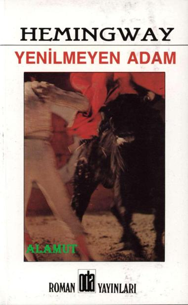

ISBN 975-385-111-1
Baskı: Umut Matbaa ve Kağıtçılık Ltd. Şti.
2. Basım Ekim 1998
Alamut - Çizgiliforum.com
O D A Y A Y I N L A R I SAN. VE TİC. LTD.ŞTİ.
Tünel, Kumbaracı Yokuşu 119 Beyoğlu-İSTANBUL
Tel: 0212. 252 07 63-252 87 53 Fax: 249 79 62